Single Cell RNA Data Analysis and Visualization
This section will introduce how to prepare input files:
Supported Input Formats:
- H5 Files (Cell Ranger Output)
- Cell Ranger file: filtered_feature_bc_matrix.h5.
- Rename it to SAMPLE_NAME.h5 for proper identification.
- Cell Ranger Matrix Files
- Cell Ranger files: matrix.mtx.gz, feature.tsv.gz, barcode.tsv.gz.
- Rename as SAMPLE_NAME_matrix.mtx.gz, SAMPLE_NAME_features.tsv.gz, and SAMPLE_NAME_barcodes.tsv.gz, and upload together as a set.
- Seurat Objects
- Format: filename.rds (Seurat object). The orig.ident attribute should match the sample name(s).
- Matrix count file
- Format: Filename.txt with rows as genes and columns as sample_cellID.
Data Size and Handling:
- The tool can handle scRNA-seq data up to 3GB in the specified formats.
- Supports analysis of single or multiple samples, including up to six sample groups.
- After data upload, users can proceed with the analysis through a step-by-step workflow for the 1st Module, with the 'Next Step' button guiding users through each tab in the process.
- Once the single or multiple analysis is completed, users can analysis as per their need, there is no steps involved further
Output and Visualizations:
- High-Quality Plot Download: Users can download plots in seven formats: JPG, TIFF, PDF, SVG, BMP, EPS, and PS. However, a few specific plots, such as those requiring exceptionally high detail or complex rendering (e.g., network graphs or high-resolution heatmaps), are only available as PDF files to preserve their quality and detail.
- Summary Tables: Tables are displayed using the DT package. Users can visualize up to 100 rows (default is 10) and download the entire table as a CSV file.
- Download Seurat Object: In single or multiple sample analyses, users can download the processed results as an RDS file (Seurat Object).
Example Datasets:
To ensure seamless analysis and reproducibility, ScRDAVis includes one reference dataset for each input format, sourced from NCBI, which has been pre-tested with the tool. These datasets allow users to explore the tool's functionalities and understand the analysis workflow effectively.
Step-by-Step Approach for User Interaction
1. Single or Multiple samples analysis
1.1 Stats
- Upload and Adjust Parameters:
- Minimum cell expression per gene: Define the minimum number of cells that should express each gene.
- Minimum gene expression per cell: Set the minimum number of genes each cell should express.
- Execution:
- Click the Submit button to run the analysis based on selected parameters.
- Output:
- QC plots: Quality metrics before filtering (Fig. 1.1a).
- Feature-Feature Relationships Plot (Fig. 1.1b)
- Sample(s) cell counts table (Fig. 1.1c)
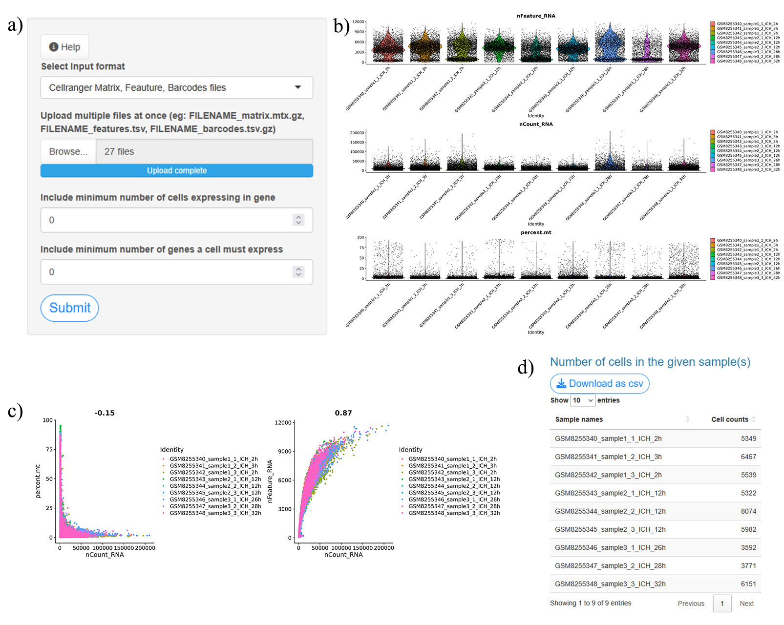
1.2. Sample Groups and QC Filtering
- Assign sample(s) group(s):
Choose the number of group(s) based on sample grouping
- If only one sample: Select 1 group.
- For multiple samples in a single condition: Select 1 group.
- For multiple samples in different conditions: Select up to 6 groups.
- Define Filtering Parameters:
- Set thresholds to remove low-quality cells and genes, and optionally filter out cells with high mitochondrial gene content.
- Execution:
- Update Filtered Data: Click to apply filters and update the dataset.
- Outputs after Filtering:
- QC matrics and Bar Plot (Fig. 1.2a-d)
- Summary Table: Filtered cell count data (Fig. 1.2e,f)

1.3. Normalization and PCA Analysis
- Normalization Methods:
- LogNormalize: Adjusts for sequencing depth or read count differences.
- Additional options: Scale Factor, Variable Genes Detection methods (vst, mvp, disp), Top Variable Features to use.
- SCT (SCTransform): Uses regularized negative binomial regression for clustering and differential expression.
- PCA Settings:
- Choose the PCA Dimensions (typically between 1-50) for analysis.
- Execution:
- Click Submit button to start the analysis.
- Outputs:
- PCA Heatmap (Fig. 1.3a)
- Elbow Plot (Fig. 1.3b)
- PCA Plot (sample-wise or group-wise) (Fig. 1.3c,d)
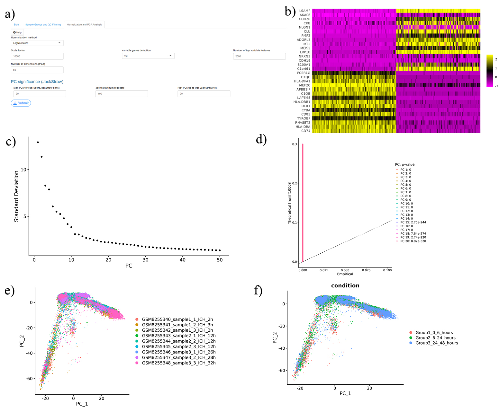
1.4. Clustering
- Clustering Step:
- Find Neighbors: The users selects the dimensions to use (PCA, integrated dimensions, etc.) and k-nearest neighbors.
- Clustering Algorithm: Select between Louvain, SLM or Leiden algorithms for clustering.
- Resolution Control: The users can adjust the resolution (0.1 to 1) parameter to control the granularity of clusters.
- Dimension Reduction:
- o Choose between UMAP or t-SNE for dimensionality reduction.
- For UMAP: Users can adjust parameters like min.dist, k-nearest-neighbours, and the number of dimensions.
- For t-SNE: Users can adjust the number of dimensions
- Integration Method:
- Select integration method(s): CCA, RPCA, Harmony, or JointPCA. These methods will allow users to handle dataset complexities and integrate data from multiple samples.
- Execution:
- Click Submit button to start the analysis.
- Visualize and Compare:
- Display UMAP or t-SNE plots with clustering labels and sample/condition overlays (Fig. 1.4a,c,e).
- Bar charts (Fig. 4b,d,f) and tables show cell counts per cluster and per sample/condition (Fig. 1.4g-i).
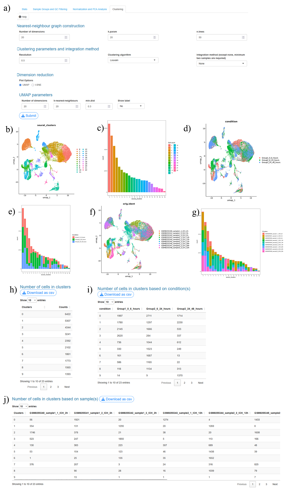
1.5. Remove Doublets
- Doublet Detection:
- Uses DoubletFinder to identify potential doublets, helping identify cells that may contain RNA from more than one original cell.
- Start with an estimated doublet rate of 7.5%-10% (0.075 to 0.1) of total cell count.
- Execution:
- Click Detect Doublet button to start the analysis.
- Outputs:
- UMAP or t-SNE Plot: Shows singlet and doublet cells, color-coded by cluster, sample, or group (Fig. 1.5a-d).
- Summary Table: Counts of singlet and doublet cells (Fig. 1.5e).
- Remove or keep doublets:
- Users can choose to Keep or Remove Doublets. Updated plots and tables reflect the selection (Fig. 1.5f-o).
1.6. Marker Identification
- Identify markers in all clusters (FindAllMarkers):
- Customizable parameters:
- Minimum cell percentage (min.pct) to specify the minimum fraction of cells in which a gene is expressed.
- Log fold-change threshold (logfc.threshold) to filter markers based on expression magnitude.
- Statistical test options (test.use), including Wilcoxon rank sum (wilcox), Wilcoxon-Limma hybrid (wilcox_limma), binomial (bimod), ROC, t-test, likelihood ratio test (LR), and MAST.
- Positive markers only (only.pos), with options for yes or no, to focus on upregulated genes in the target cluster.
- When using SCTransform for normalization, out tool uses PrepSCTFindMarkers preps the data for accurate differential testing by adjusting the SCT assay, making results more reliable for FindMarkers and FindAllMarkers.
- Output: Heatmap of the top 5 genes per cluster (Fig. 1.6a), helping users visualize the distinguishing genes for each cluster and Summary table of markers or expressed genes (Fig. 1.6b).
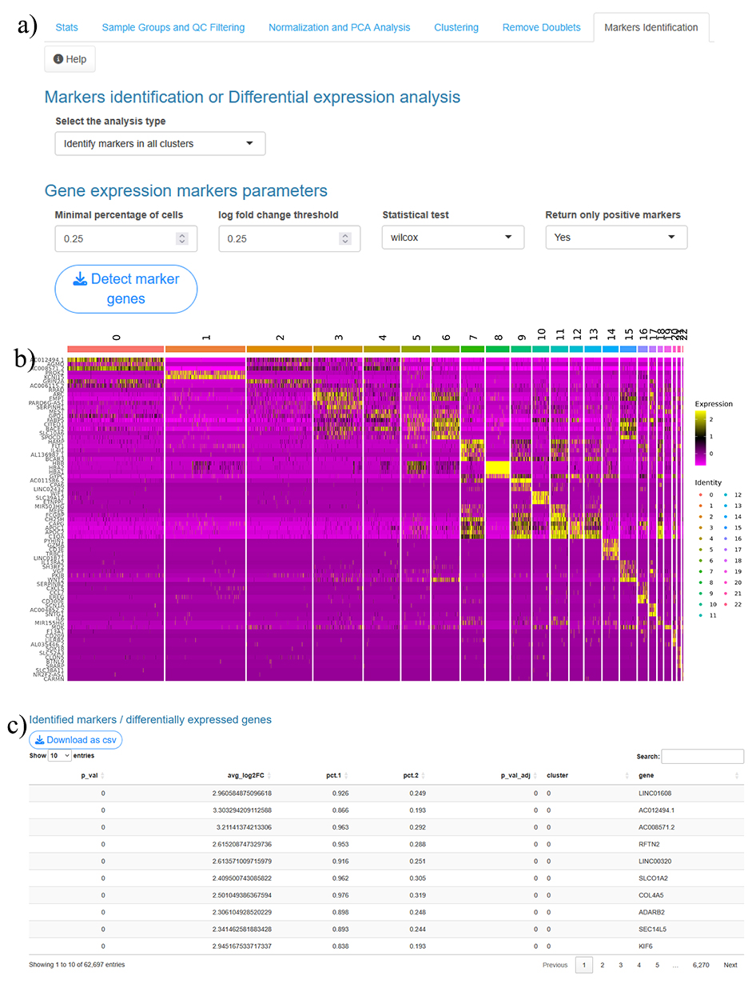
- Marker identification in one specific cluster or between two clusters (FindMarkers):
- Identifies markers for one cluster against another or against all other clusters.
- Includes all the customizable parameters noted above, enabling targeted cluster comparison with refined criteria.
- Output: A table format displaying the expressed genes for the specified clusters, ideal for in-depth comparisons.
- Conserved marker identification for one vs. all cluster or between two clusters (FindConservedMarkers):
- Finds markers conserved across groups (e.g., conditions) for a cluster, or conserved markers between two specific clusters.
- Utilizes the same customizable parameters for consistency across comparisons.
- Output: A table format with expressed genes, providing insights into markers consistently expressed across groups or clusters.
1.7. Cell Type Prediction
- ScType:
- Predefined Tissue Types: Users can select from 15 tissue types, including: Adrenal, Brain, Eye, Heart, Immune, Intestine, Kidney, Liver, Lung, Muscle, Pancreas, Placenta, Spleen, Stomach, Thymus.
- Tissue Classification: Automatically classifies the cells based on the selected tissue type.
- SingleR:
- Reference Datasets: Users can use reference datasets such as: Human Primary Cell Atlas, Blueprint/ENCODE, Mouse RNA-seq, Immunological Genome Project, Database of Immune Cell Expression/eQTLs/Epigenomics, Novershtern Hematopoietic data, Monaco immune data.
- Prediction: Predicts the cell types based on these well-known reference datasets.
- GPTCelltype:
- GPT Models: Utilizes various GPT models, including: GPT-4, GPT-4-turbo, GPT-4o-mini, GPT-4o, ChatGPT-4o-latest, GPT-3.5-turbo, GPT-3.5-turbo.
- Gene Requirements: Requires a minimum number of top genes for accurate prediction.
- Availability: Available via the web platform. To use it locally, users need to update their API key by setting Sys.setenv(OPENAI_API_KEY = 'your_openai_API_key') in the global.R file.
- Own Cell Labels:
- User-Defined Labels: Users can manually input their own cell type labels for each cluster.
- Cluster Grouping: If multiple clusters need the same label, users should provide the same label name for those clusters.
- UMAP/t-SNE Labels:
- Label display options: Users can choose to show or hide cell type labels in the UMAP or t-SNE plots.
- Execution:
- Click Detect cell type button to start the analysis.
- Output:
- Plot: Generates an image plot showing the predicted cell types (Fig. 1.7a,b).
- Summary Table: Provides a summary table with the predicted cell types and associated scores (Fig. 1.7c).
1.8. Cluster-based Plots
- Gene Selection:
- Top Genes: Users can select the top features or genes (from 2 to 10).
- Custom Genes: Users may also input custom gene names by selecting them from a drop-down menu (list of genes) and entering the desired gene names as a comma-separated list.
- Plot Types:
- Multiple visualization formats are available, including: Dot Plot, Violin Plot, Ridge Plot, Feature Plot.
- Grouping and Splitting:
- Group by: Users can organize the data by Seurat clusters or labels generated from previous cell type prediction steps.
- Split by: If multiple samples are present, plots can be split by condition or sample to compare expression patterns across groups.
- Execution:
- Click Generate plots button to start the analysis.
- Output:
- Plot: The user receives one of the chosen plot formats (violin plot, dot plot, feature plot or ridge plot) (Fig. 1.8a-d).
- Summary Tables: The tool generates tables showing marker gene cell counts and cell proportions, providing an additional layer of quantitative insight (Fig. 1.8e).
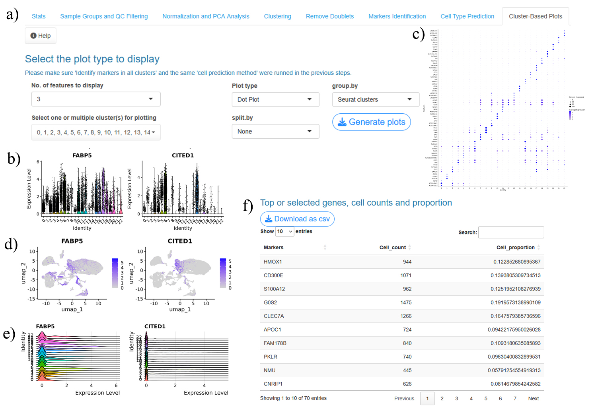
1.9. Condition-based Analysis
- Group Selection:
- Users can compare gene expression between two conditions by selecting one group per dropdown menu.
- Customizable Parameters:
- Minimum Cell Percentage (min.pct): Sets the minimum fraction of cells in which a gene must be expressed.
- Log Fold-Change Threshold (logfc.threshold): Filters markers by expression magnitude.
- Statistical Tests (test.use): Users can choose from various methods, including Wilcoxon rank sum, Wilcoxon-Limma hybrid, binomial, ROC, t-test, likelihood ratio test, and MAST.
- Positive Markers Only (only.pos): Option to display only upregulated genes in the target cluster.
- Visualization Options:
- Multiple formats are available, including: Dot Plot, Violin Plot, Ridge Plot, Feature Plot, Volcano Plot
- Grouping:
- Group By: Users can group data by Seurat clusters or predicted cell type labels.
- Number of Features: Allows display of a specific number of up- and down-regulated genes (e.g., 15).
- Execution:
- Click Submit button to start the analysis.
- Output:
- Plot: The users receives the chosen plot type, providing visual comparison (Fig. 1.9a-e).
- Summary Tables: Table contains the differentially expressed genes between the slected groups (Fig. 1.9f).
- This setup enables users to conduct detailed comparisons between conditions, facilitating insights into differential gene expression and cellular responses.
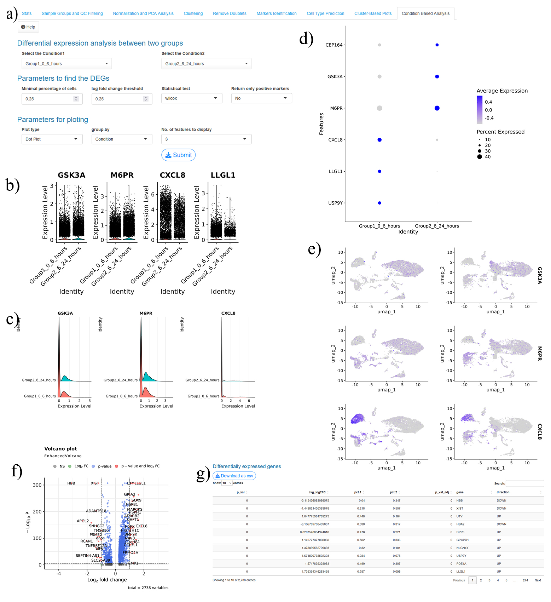
Subclustering
In ScRDAVis, users can further explore specific clusters of interest by performing subclustering analysis. This feature allows for a more granular examination of cell populations within one or multiple clusters, based on the user’s selection. Similar output were generated as like as above for the selected cluster(s) or cell type(s).
2.1. Cluster Selection:
- Users can choose one or multiple clusters for subclustering.
- Clusters can be selected based on Seurat clusters or previously predicted annotation labels.
2.2. Subclustering Analysis Steps:
- The subclustering process mirrors the main workflow, with dedicated tabs for each stage, allowing users to perform the following analyses on the selected cluster(s):
- Cell Stats: Overview of cell metrics within the selected clusters, including minimum gene and cell expression thresholds.
- Normalization and PCA Analysis: Options to normalize and vizualize the PCA data for secific cluster(s). (use the same method used in the above menu)
- Clustering: Allows users to re-cluster cells within the subclusters, providing insights into finer subpopulations.
- Marker Identification: Users can identify markers specific to subclusters, with options to customize parameters for marker detection.
- Cell Type Prediction: Provides options to predict cell types within the selected subclusters using ScType, SingleR, GPTCelltype, or custom labels.
- Cluster-Based Plots: Users can visualize gene expression within subclusters through Dot, Violin, Ridge, or Feature plots.
- Condition-Based Analysis: Enables differential expression comparisons within subclusters, providing insights into condition-specific gene expression patterns.
3. Correlation Network Analysis
ScRDAVis includes Cluster-Based Correlation Analysis using the genesorteR package. This feature helps users explore relationships and interactions among genes within specific clusters by calculating pairwise correlations.
- Prerequisites:
- Correlation Network Analysis becomes available after completing single or multiple samples analysis or subclustering analysis up to cell type prediction.
- Users can choose to conduct analysis on: Seurat clusters or predicted cell type labels from single, multiple, or subcluster analyses.
- Correlation Methods:
- Execution:
- Click the Cluster correlation network button to run the analysis based on selected parameters.
- Output:
- Correlation Heatmap: Displays the correlation values between genes within clusters in a matrix format (Fig. 3a).
- Correlation Network Plot: Depicts the relationships between genes as a network, highlighting strongly correlated pairs (Fig. 3b).
- Summary Table: With the complete correlation matrix for detailed analysis (Fig. 3c)
This analysis provides a deeper understanding of gene co-expression and interaction patterns within clusters, aiding in the identification of significant biological relationships.
4. GO Term Analysis
ScRDAVis provides integrated Gene Ontology (GO) term analysis using the clusterProfiler package, enabling users to explore biological functions, molecular mechanisms, and cellular components related to gene expression patterns in single, multiple, or subcluster analyses. Here’s how users can conduct GO analysis:.
- Prerequisites:
- GO analysis becomes available after completing single or multiple samples analysis or subclustering analysis up to cell type prediction.
- Input Options:
Users can choose to conduct GO analysis on:
- Seurat clusters or predicted cell type labels from single, multiple, or subcluster analyses.
- Users can use one or multiple clusters at a time, with an adjustable parameter (p_val_adj < 0.05) for significant results.
- A custom list of genes: Users can manually enter gene names (comma-separated) to investigate GO terms for genes of specific interest.
- Organisms Supported for GO Term Mapping:
ScRDAVis supports GO analysis for five organisms, mapping gene IDs to gene symbols:
- Human: org.Hs.eg.db
- Mouse: org.Mm.eg.db
- Rat: org.Mmu.eg.db
- Pig: org.Ss.eg.db
- Rhesus: org.Rn.eg.db
- GO Term Analysis Parameters:
Ontology Method: Users can choose to focus on specific biological aspects or all three:
- Biological Process (BP)
- Molecular Function (MF)
- Cellular Component (CC)
- All: To analyze across all three categories.
- Adjustable Parameters:
- pAdjustMethod: Select the method to adjust for multiple testing.
- pvalueCutoff: Set a cutoff for p-values.
- qvalueCutoff: Define a q-value threshold for significance.
- Minimum Size of Genes: Minimum number of genes required in a GO term.
- Maximum Size of Genes: Maximum number of genes in a GO term.
- Plot Type: Choose a visualization format (Dot Plot, Bar Plot, Net and UpSetPlot).
- Number of Categories to Plot: Select the number of categories to display (1 to 50).
- Execution:
- Click the GO Term button to run the analysis based on selected parameters.
- Output
The GO Term analysis provides:
- Plots: Dot plot, Bar plot, UpSet plot and Network plot for the selected ontology categories (Fig. 4a-d).
- Summary Table: A downloadable table summarizing the GO terms, adjusted p-values, and other relevant metrics, allowing users to interpret and visualize biological insights (Fig. 4e).
This GO term analysis feature in ScRDAVis provides users with an accessible, visually informative, and comprehensive view of gene functionality across clusters and conditions, enabling enhanced biological interpretation of scRNA-seq data.
5. Pathway Analysis
ScRDAVis offers pathway analysis through KEGG and Reactome databases using the clusterProfiler and ReactomePA packages. Users can gain insights into biological pathways associated with specific gene expression profiles from single, multiple, or subcluster analyses.
- Prerequisites:
- Pathway analysis becomes available after completing single or multiple samples analysis or subclustering analysis up to cell type prediction.
- Input Options:
Pathway analysis can be performed on:
- Seurat clusters or predicted cell type labels from single, multiple, or subcluster analyses.
- One or multiple clusters simultaneously, with results filtered by an adjusted p-value (p_val_adj < 0.05).
- A custom list of genes: Users can input specific gene names (comma-separated) to focus on pathways for genes of interest.
- Organisms Supported for Pathway Mapping:
ScRDAVis enables pathway mapping for multiple organisms:
- KEGG Pathways: Supports human (org.Hs.eg.db), mouse (org.Mm.eg.db), and rat (org.Mmu.eg.db) for mapping gene IDs to symbols.
- Reactome Pathways: Available for human, mouse, and rat.
- Pathway Analysis Parameters:
- pAdjustMethod: Choose a method for multiple testing correction.
- pvalueCutoff: Set a threshold for p-values.
- qvalueCutoff: Define a q-value cutoff for pathway significance.
- Minimum Size of Genes: Minimum gene count per pathway.
- Maximum Size of Genes: Maximum gene count per pathway.
- Plot Type: Choose visualization format (Dot Plot, Bar Plot, Net and UpSetPlot Plot).
- Number of Pathways to Plot: Select the number of pathways to display (1 to 50).
- Execution:
- Click the Pathway Analysis button to run the analysis with the selected parameters.
- Output
Pathway analysis results include:
- Visualizations: Dot plot, Bar plot, UpSet plot and Network plot, showcasing significant pathways (Fig. 5a-d).
- Summary Table: A downloadable table with pathway details, adjusted p-values, and other metrics for further exploration and interpretation (Fig. 5e).
The pathway analysis functionality in ScRDAVis helps users understand the biological processes and signaling pathways linked to gene expression profiles across clusters and conditions, providing a deep functional understanding of their ScRNA-seq data.
6. GSEA Analysis
The Gene Set Enrichment Analysis (GSEA) feature in ScRDAVis leverages the fgsea package to identify enriched pathways using ranked gene lists, such as those generated from differential expression analysis. This allows users to assess pathway-level expression changes and gain insights into functional changes across clusters or conditions.
- Prerequisites
- GSEA analysis can be conducted following single or multiple samples analysis or subclustering analysis up to cell type prediction.
- Input Options
GSEA analysis can be performed on:
- Seurat clusters or predicted cell type labels derived from single, multiple, or subcluster analyses.
- Single or multiple clusters simultaneously, with results filtered by an adjusted p-value (p_val_adj < 0.05).
- Organisms and Gene Sets Supported
- Organisms: Human and mouse gene ID mapping.
- Gene Set Categories: Using the msigdbr package, which provides gene sets compatible with fgsea from the Molecular Signatures Database (MSigDB). Available categories include:
- Hallmark Gene Sets (H)
- Positional Gene Sets (C1)
- Curated Gene Sets (C2)
- Regulatory Target Gene Sets (C3)
- Computational Gene Sets (C4)
- Ontology Gene Sets (C5)
- Oncogenic Signature Gene Sets (C6)
- Immunologic Signature Gene Sets (C7)
- Cell Type Signature Gene Sets (C8)
- GSEA Analysis Parameters:
- scoreType: Define the scoring method for pathway enrichment.
- Minimal Size of Genes: Minimum number of genes in a gene set.
- Maximal Size of Genes: Maximum number of genes in a gene set.
- Number of Permutations: Control the precision of p-value calculations.
- Plot Type: Choose visualization format (GSEA Plot, PlotGseaTable, Bar Plot).
- Number of Significant Pathways to Plot: Select the number of pathways to display (1 to 40).
- Execution:
- Click the GSEA Analysis button to run the analysis with the selected parameters.
- Output
The GSEA analysis provides:
- Visualizations:
- GSEA Plot: Displays the enrichment score curve (Fig. 6a).
- PlotGseaTable: Shows enriched pathways and their enrichment scores (Fig. 6b).
- Bar Plot: Highlights top significant pathways (Fig. 6c).
- Summary Table: A downloadable table of enriched pathways, adjusted p-values, and scores. If the users selects the top 10 significant pathways, the tool displays the top 5 upregulated and top 5 downregulated pathways (Fig. 6d).
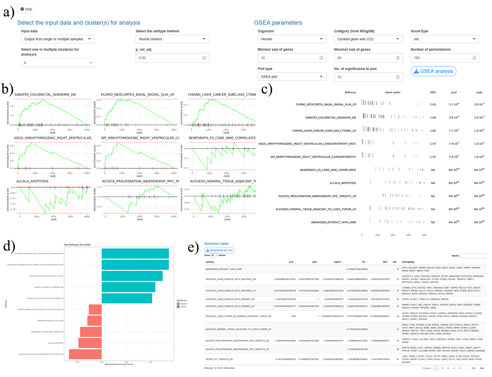
GSEA analysis in ScRDAVis offers a powerful method for understanding pathway-level dynamics, supporting biological interpretation of ScRNA-seq data through visual and quantitative assessments of enriched pathways.
7. Cell-Cell Communication Analysis
ScRDAVis integrates CellChat to enable users to analyze cell-cell communication within single or multiple samples, as well as for subclusters. This analysis identifies potential ligand-receptor interactions, allowing users to explore how different cell types or clusters communicate based on gene expression patterns.
- Input Options
- Source of Input: Users can analyze cell-cell communication using Seurat clusters or predicted cell type labels generated from single, multiple, or subcluster analysis.
- Organisms Supported: Human and mouse datasets are available for ligand-receptor interaction mapping.
7.1. Parameters for Cell-Cell Communication
- Identify Over-Expressed Genes:
- Threshold of Cell Expression Percentage: Minimum percentage of cells expressing the genes.
- Log Fold Change Threshold: Minimum log fold-change required for genes to be considered over-expressed.
- p-Value Threshold: Statistical significance threshold.
- Compute Communication Probability:
- Expression Method: Choose how to compute the average expression per cell group (options: triMean, truncatedMean, thresholdedMean, median).
- Filter Communication:
- Minimum Cell Requirement: Minimum number of cells needed in each cell group to analyze cell-cell communication.
- Communication Pattern Identification:
- Pattern k-Value: Defines the number of communication patterns to identify.
- Label Option:
- Show or hide labels in plots.
- Execution:
- Click to Cell-Cell communication analysis button to start the analysis.
- Output for Cell-Cell Communication Analysis
The analysis generates the following visual outputs:
- Interaction Plots:
- Counts and Weights/Strength: Displays the frequency and intensity of interactions among cell groups (Fig. 7.1a,b).
- Interaction Heatmap: Shows interaction strengths across all clusters or cell types (Fig. 7.1c).
- Incoming and Outgoing Signaling Patterns: Visualizes communication patterns for target and secreting cells (Fig. 7.1d,e).
- Interaction Table: Includes source and target cell types, ligand-receptor pairs, and interaction scores (Fig. 7.1f).
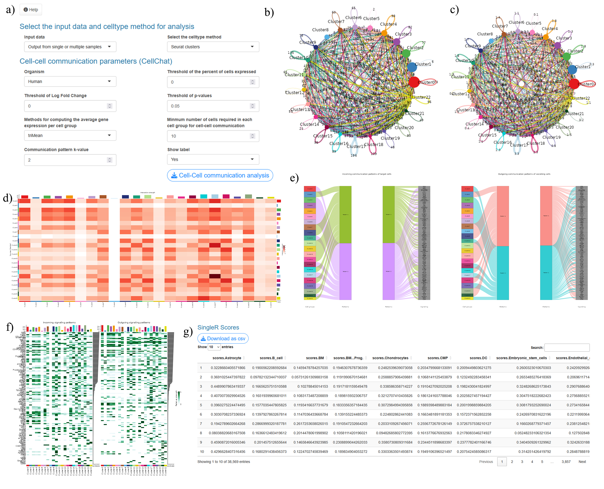
7.2. Analyzing Specific Signaling Pathways
For a more focused analysis, users can select a specific signaling pathway from a drop-down menu, enabling detailed visualization of the chosen pathway.
- Outputs for Specific Signaling Pathway:
- Circle Plot: Visualizes interactions among cell groups by counts (Fig. 7.2a).
- Chord Plot: Depicts connections between cell types via ligand-receptor pairs (Fig. 7.2b).
- Interaction Heatmap: Interaction strengths among clusters for the specific pathway (Fig. 7.2c).
- Bubble Plot and Bar Plot: Display interaction intensity for the selected pathway (Fig. 7.2d).
- Hierarchy Plot: Shows the hierarchical organization of cell types and their interactions (Fig. 7.2e).
- Bar Plot: Shows the network analysis contribution in bar plot (Fig. 7.2f).
- Violin Plot: Shows expression of pathway-associated genes (Fig. 7.2g).
- Signaling Pathway Table: Contains source, target, ligand, receptor, and interaction details for the specific pathway (Fig. 7.2h).
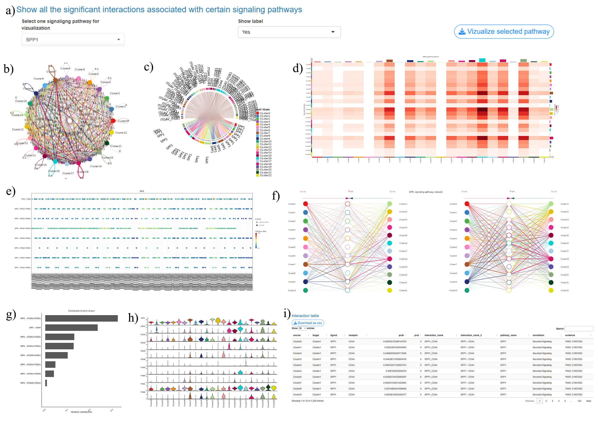
This suite of tools and visualizations enables detailed exploration of cell communication, allowing users to interpret inter-cellular signaling dynamics in ScRNA-seq datasets with biological relevance.
8. Trajectory and Pseudotime Analysis
ScRDAVis integrates Monocle3 for trajectory and pseudotime analysis, allowing users to study the dynamic progression of cells over pseudotime and identify genes with functional changes along this trajectory.
- Preparing for Trajectory and Pseudotime Analysis
- Prerequisites: Users must complete analysis up to the cell type prediction step in either single or multiple sample analysis, or subclustering analysis.
- Input Format: The tool automatically converts the Seurat object to Monocle3 format, and users can choose between Seurat clusters or predicted cell type labels as input.
- UMAP Requirement: UMAP should be used in clustering steps for compatibility with Monocle3.
8.1. Parameters for Learning Trajectory
- Partitioning Options:
- use_partition: Toggle to specify partitions for different groups.
- close_loop: Set to close or open the trajectory loop.
- label_groups_by_cluster: Labels cell groups by cluster.
- label_branch_points, label_roots, label_leaves: Allows labeling of key points on the trajectory (branches, roots, leaves).
- Execution:
- Once parameters are set, users can click the Learn Trajectory button to generate the trajectory plot.
- Output:
- Trajectory Plot: Displays cell progression in trajectory space, providing insight into the cellular development path (Fig. 8a).
8.2. Pseudotime Ordering of Cells
- Parameters:
- Root Cluster Selection: Users must select one cluster to serve as the root cluster, marking the starting point of pseudotime.
- Labeling Options: Parameters include options to label groups by clusters, as well as marking branch points, roots, and leaves.
- Execution:
- Click to Submit button to start the analysis.
- Output:
- Pseudotime Plot: Cells are arranged by pseudotime, showing the developmental trajectory (Fig. 8b).
- Bar Chart: Cells are ordered based on both Seurat clusters and Monocle3 pseudotime (Fig. 8c).
8.3. Identifying Genes with Functional Changes in Pseudotime
To explore gene expression dynamics along the pseudotime trajectory, users can analyze gene expression changes:
- Parameters:
- Neighbor Graph Selection: Users can select between Principal Graph or K-Nearest Neighbor (KNN) to model gene expression changes.
- Execution:
- Click Find Genes Button: Begins the identification of genes whose functions vary along pseudotime.
- Output:
- Pseudotime Plot of Cells: Visual representation of cells in pseudotime with associated gene expression (Fig. 8d).
- Summary Table: Lists genes with dynamic functional changes along pseudotime (Fig. 8e).
8.4. Plotting Gene Expression in Pseudotime
Users can visualize specific genes to observe their expression patterns over pseudotime:
- Gene Selection:
- Top Genes: By default, the tool plots the top 5 genes with dynamic changes, adjustable between 1 to 10 genes.
- Custom Genes: Users can specify a custom list of genes (comma-separated) to plot in pseudotime.
- Output:
- Creates a feature plot to display gene expression across cells in pseudotime (Fig. 8f).
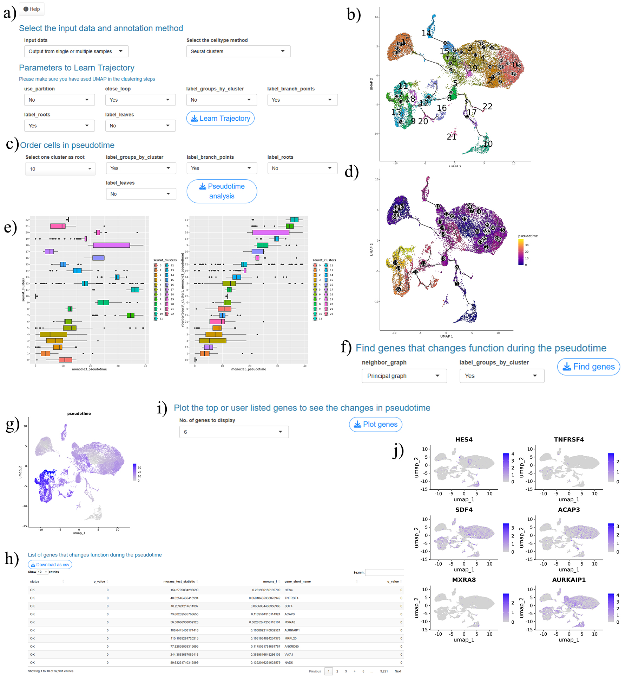
This functionality helps users analyze and visualize gene dynamics, offering insights into cellular progression and identifying key genes in developmental pathways.
9. Co-Expression and TF Analysis
9.1. Co-Expression Network Analysis
ScRDAVis incorporates co-expression network analysis for ScRNA-seq data using the hdWGCNA package. This feature enables users to identify gene modules and their relationships in Seurat clusters or predicted cell type labels.
- Prerequisites:
- Co-expression network analysis becomes available after completing single or multiple samples analysis or subclustering analysis up to cell type prediction.
- User can use one cluster at a time.
- Metacell Construction:
Aggregates small groups of similar cells from the same biological sample. Uses the k-Nearest Neighbors (KNN) algorithm to group similar cells and compute a metacell gene expression matrix.
- Parameters:
- k: Number of nearest neighbors for aggregation.
- min_cells: Minimum number of cells in a group to construct metacells.
- max_shared: Maximum number of cells shared across two metacells.
- target_metacells: Maximum number of target metacells to construct.
- Co-Expression Network Construction:
Builds networks with customizable parameters:
- softpower: Determines the scale-free topology for constructing networks.
- networkType: Options include signed, unsigned, or signed hybrid.
- Module Eigengenes and Connectivity:
- Scales data using selectable models: linear, poisson, or negbinom.
- Allows Harmony batch correction for harmonized module eigengenes (hMEs), selectable by the users.
- Hub Gene Extraction:
- Extracts the top N hub genes for selected modules, aiding in the identification of key regulators.
- Execution:
- Click the WGCNA Analysis button initiates co-expression network analysis.
- Outputs:
Few plots were not available in image files format so we have provided those as pdf files.
- Soft Power Plots: Visualizes the selection of the optimal soft power parameter for network construction (Fig. 9.1a).
- Co-Expression Network Visualization: Displays modules with distinct colors representing gene clusters (Fig. 9.1b).
- Ranked Genes in Modules: Provides a list of genes ranked by module membership (kME) (Fig. 9.1c).
- Feature Plots: Highlights the expression of modules or specific genes (Fig. 9.1d).
- Module Relationships Plots: Correlation between modules based on harmonized module eigengenes (hMEs) (Fig. 9.1e).
- Seurat DotPlot with Modules: Displays module-specific gene expression across clusters (Fig. 9.1f).
- Individual Module Network Plots: Visualizes the gene network for specific modules (Fig. 9.1g).
- Module UMAP Plots: Maps modules onto UMAP visualizations for spatial context (Fig. 9.1h).
- Summary Table: Soft Power Table: Lists optimal soft power values (Fig. 9.1i). Module Assignment Table: Details gene-module relationships with colors (Fig. 9.1j). Hub Genes Table: Identifies top hub genes per module (Fig. 9.1k).
This functionality provides a robust framework for uncovering intricate co-expression patterns and identifying key drivers in single-cell datasets.
9.2. Transcription Factor Regulatory Network Analysis
Transcription Factor (TF) Regulatory Network Analysis in ScRDAVis employs the hdWGCNA package to construct and analyze TF regulatory networks based on ScRNA-seq data. This feature allows users to identify gene modules and investigate TF-mediated regulation within clusters or predicted cell type labels.
- Prerequisites:
- Complete single or multiple sample analysis or subclustering analysis, including cell type prediction.
- Analysis is performed one cluster at a time.
- TF Regulatory Network Construction:
- TF Binding Motif Information:
- Human: EnsDb.Hsapiens.v86, BSgenome.Hsapiens.UCSC.hg38.
- Mouse: EnsDb.Mmusculus.v79, BSgenome.Mmusculus.UCSC.mm10.
- Motifs from the JASPAR 2020 database for multiple species.
- Machine Learning Model:
- XGBoost used to model TF regulation for each gene with:
- max_depth : Maximum depth of a tree
- eta : Step size shrinkage used in update to prevent overfitting
- alpha: L1 regularization term on weights
- TF Regulon Strategy:
- Strategy A selects the top TFs for each gene by default
- reg_thresh : Threshold for regulatory score)
- n_tfs : The number of top TFs to keep for each gene
- Regulon Expression Signatures:
- Positive correlation: cor_thresh = 0.05. Threshold for TF-gene correlation for genes to be included in the positive regulon score
- Negative correlation: cor_thresh = -0.05. threshold for TF-gene correlation for genes to be included in the negative regulon score
- Execution:
- Click Transcription factor analysis button to start the analysis.
- Output and Visualization:
- Module Regulatory Network Plots: Positive, negative, and combined regulatory network plots. Visualize TF-to-target relationships categorized by regulatory effects (Fig. 9.2.1a-d).
- Regulated Scores Table: Comprehensive list of TFs and their downstream targets (Fig. 9.2.1e).
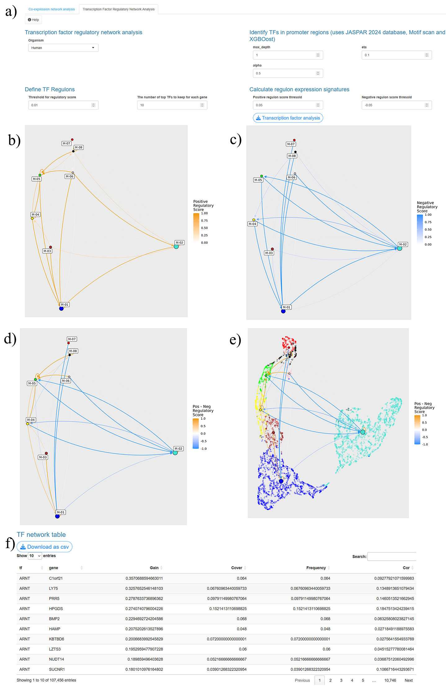
- TF-Specific Visualizations:
Unravel regulatory mechanisms governing gene expression in cellular contexts. Identify key transcription factors and their target genes for hypothesis generation and validation. Explore positive and negative regulatory effects within gene modules.
- Select a TF from a dropdown menu to generate specific plots:
- Outputs:
- UMAP Plots: Spatial distribution of the TF (Fig. 9.2.2a).
- Bar Plots: Contribution of the TF across modules (Fig. 9.2.2b).
- Network Plots: Positive, negative, and combined networks, with primary, secondary and tertiary targets (Fig. 9.2.2c-e).
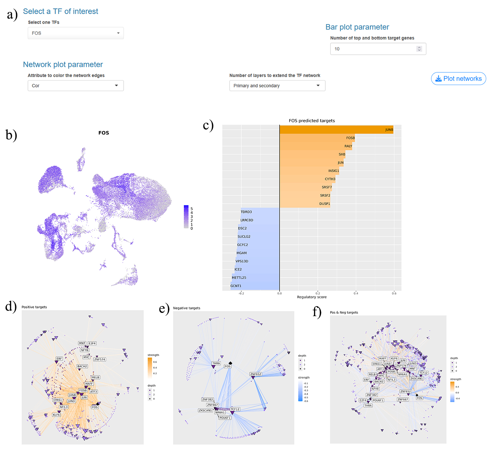
This functionality provides a comprehensive view of transcriptional regulation in ScRNA-seq data, enabling detailed exploration of TF-driven cellular processes.